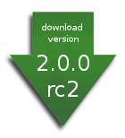

<div style="float:right;margin:10px;"><a href="[preferred]/ant/ivy/2.0.0-rc2/"></a></div> The second release candidate for 2.0.0 of Apache Ivy, <b>2.0.0-rc2</b>, is available. Check the [[history/2.0.0-rc2/release-notes release notes]]. Use the links below to download a distribution of Ivy from one of our mirrors. It is good practice to <a href="[location]#VerifyReleases">verify the integrity</a> of the distribution files, especially if you are using one of our mirror sites. To do this you must use the signatures from our <a href="http://www.apache.org/dist/ant/ivy/">main distribution directory</a>. Ivy is distributed as zip and tar.gz archives - the contents are the same. Please note that the tar.gz archives contain file names longer than 100 characters and have been created using GNU tar extensions. Thus they must be untarred with a GNU compatible version of tar. If you do not see the file you need in the links below, please see the <a href="http://www.apache.org/dist/ant/ivy/">master distribution directory</a> or, preferably, its <a href="[preferred]/ant/ivy/">mirror</a>. <h2>Select mirror</h2> You are currently using <b>[preferred]</b>. If you encounter a problem with this mirror, please select another mirror. If all mirrors are failing, there are <i>backup</i> mirrors (at the end of the mirrors list) that should be available. <form action="[location]" method="get" id="SelectMirror"> Other mirrors: <select name="Preferred"> [if-any http] [for http]<option value="[http]">[http]</option>[end] [end] [if-any ftp] [for ftp]<option value="[ftp]">[ftp]</option>[end] [end] [if-any backup] [for backup]<option value="[backup]">[backup] (backup)</option>[end] [end] </select> <input type="submit" value="Change" /> </form> <h2>Ivy 2.0.0-rc2</h2> <em>Ivy 2.0.0-rc2 has been released on 4-Nov-2008 and may not be available on all mirrors for a few days.</em> To get information about the different kind of distributions, see [[choose-distrib that page]]. <table border="0" cellpadding="4px"> <tr><td><b>binary</b></td> <td><a href="[preferred]/ant/ivy/2.0.0-rc2/apache-ivy-2.0.0-rc2-bin.zip">apache-ivy-2.0.0-rc2-bin.zip</a> (<a href="[preferred]/ant/ivy/2.0.0-rc2/apache-ivy-2.0.0-rc2-bin.zip.asc">PGP</a> <a href="[preferred]/ant/ivy/2.0.0-rc2/apache-ivy-2.0.0-rc2-bin.zip.sha">SHA1</a> <a href="[preferred]/ant/ivy/2.0.0-rc2/apache-ivy-2.0.0-rc2-bin.zip.md5">MD5</a>) <a href="[preferred]/ant/ivy/2.0.0-rc2/apache-ivy-2.0.0-rc2-bin.tar.gz">apache-ivy-2.0.0-rc2-bin.tar.gz</a> (<a href="[preferred]/ant/ivy/2.0.0-rc2/apache-ivy-2.0.0-rc2-bin.tar.gz.asc">PGP</a> <a href="[preferred]/ant/ivy/2.0.0-rc2/apache-ivy-2.0.0-rc2-bin.tar.gz.sha">SHA1</a> <a href="[preferred]/ant/ivy/2.0.0-rc2/apache-ivy-2.0.0-rc2-bin.tar.gz.md5">MD5</a>)</td></tr> <tr><td><b>binary-with-dependencies</b></td> <td><a href="[preferred]/ant/ivy/2.0.0-rc2/apache-ivy-2.0.0-rc2-bin-with-deps.zip">apache-ivy-2.0.0-rc2-bin-with-deps.zip</a> (<a href="[preferred]/ant/ivy/2.0.0-rc2/apache-ivy-2.0.0-rc2-bin-with-deps.zip.asc">PGP</a> <a href="[preferred]/ant/ivy/2.0.0-rc2/apache-ivy-2.0.0-rc2-bin-with-deps.zip.sha">SHA1</a> <a href="[preferred]/ant/ivy/2.0.0-rc2/apache-ivy-2.0.0-rc2-bin-with-deps.zip.md5">MD5</a>) <a href="[preferred]/ant/ivy/2.0.0-rc2/apache-ivy-2.0.0-rc2-bin-with-deps.tar.gz">apache-ivy-2.0.0-rc2-bin-with-deps.tar.gz</a> (<a href="[preferred]/ant/ivy/2.0.0-rc2/apache-ivy-2.0.0-rc2-bin-with-deps.tar.gz.asc">PGP</a> <a href="[preferred]/ant/ivy/2.0.0-rc2/apache-ivy-2.0.0-rc2-bin-with-deps.tar.gz.sha">SHA1</a> <a href="[preferred]/ant/ivy/2.0.0-rc2/apache-ivy-2.0.0-rc2-bin-with-deps.tar.gz.md5">MD5</a>)</td></tr> <tr><td><b>sources</b></td> <td><a href="[preferred]/ant/ivy/2.0.0-rc2/apache-ivy-2.0.0-rc2-src.zip">apache-ivy-2.0.0-rc2-src.zip</a> (<a href="[preferred]/ant/ivy/2.0.0-rc2/apache-ivy-2.0.0-rc2-src.zip.asc">PGP</a> <a href="[preferred]/ant/ivy/2.0.0-rc2/apache-ivy-2.0.0-rc2-src.zip.sha">SHA1</a> <a href="[preferred]/ant/ivy/2.0.0-rc2/apache-ivy-2.0.0-rc2-src.zip.md5">MD5</a>) <a href="[preferred]/ant/ivy/2.0.0-rc2/apache-ivy-2.0.0-rc2-src.tar.gz">apache-ivy-2.0.0-rc2-src.tar.gz</a> (<a href="[preferred]/ant/ivy/2.0.0-rc2/apache-ivy-2.0.0-rc2-src.tar.gz.asc">PGP</a> <a href="[preferred]/ant/ivy/2.0.0-rc2/apache-ivy-2.0.0-rc2-src.tar.gz.sha">SHA1</a> <a href="[preferred]/ant/ivy/2.0.0-rc2/apache-ivy-2.0.0-rc2-src.tar.gz.md5">MD5</a>)</td></tr> </table> <h2>Building from source</h2> What you can get here at the ASF is the latest sources from the Subversion repository: <code> svn co https://svn.apache.org/repos/asf/ant/ivy/core/trunk ivy </code> Then to build Ivy from source, assuming you have ant 1.6.2+ and a jdk 1.4+ installed, then you only need to run the following command: <code> ant jar </code> Then you will find ivy.jar in <b>build/artifact</b>. <h2>Snapshot build</h2> We drop snapshot builds from time to time to help people give early testing, without going into the full release process. These snapshot builds are usually built from the trunk with no other testing than our unit tests suite. Here is where they can be found: http://ant.apache.org/ivy/downloads/latest/ <h2><a name="VerifyReleases">Verify Releases</a></h2> It is essential that you verify the integrity of the downloaded files using the PGP signature or the SHA1 or MD5 checksums. The checksums are not as strong indicators as the PGP signature. The PGP signatures can be verified using PGP or GPG. First download the <a href="http://www.apache.org/dist/ant/KEYS">KEYS</a> as well as the asc signature file for the particular distribution. Make sure you get these files from the <a href="http://www.apache.org/dist/ant/ivy/">main distribution directory</a>, rather than from a mirror. Then verify the signatures using <code> % pgpk -a KEYS % pgpv apache-ivy-2.0.0-rc2-bin.tar.gz.asc </code> <em>or</em> <code> % pgp -ka KEYS % pgp apache-ivy-2.0.0-rc2-bin.tar.gz.asc </code> <em>or</em> <code> % gpg --import KEYS % gpg --verify apache-ivy-2.0.0-rc2-bin.tar.gz.asc </code> Alternatively, you can verify the checksums on the files. Unix programs called md5/sha1 or md5sum/sha1sum are included in many unix distributions. *sum is also available as part of <a href="http://www.gnu.org/software/textutils/textutils.html">GNU Textutils</a>. Windows users can get binary md5 programs from <a href="http://www.fourmilab.ch/md5/">here</a>, <a href="http://www.pc-tools.net/win32/freeware/console/">here</a>. <a href="http://www.slavasoft.com/fsum/">fsum</a> supports MD5 and SHA1. We highly recommend to verify the PGP signature, though. <h2>Latest stable version (not Apache)</h2> The latest stable version of Ivy is <a href="history/1.4.1.html">1.4.1</a>, and is not an Apache incubating release, but a release done while Ivy was still hosted by jayasoft: <ul> <li><a href="http://www.jaya.free.fr/downloads/ivy/1.4.1/ivy-1.4.1-bin.zip">binaries</a></li> <li><a href="http://www.jaya.free.fr/downloads/ivy/1.4.1/ivy-1.4.1-src.zip">sources</a></li> <li><a href="http://www.jaya.free.fr/downloads/ivy/1.4.1/ivy-1.4.1-doc.zip">documentation</a></li> </ul> For previous version information and download, see the [[history history page]].